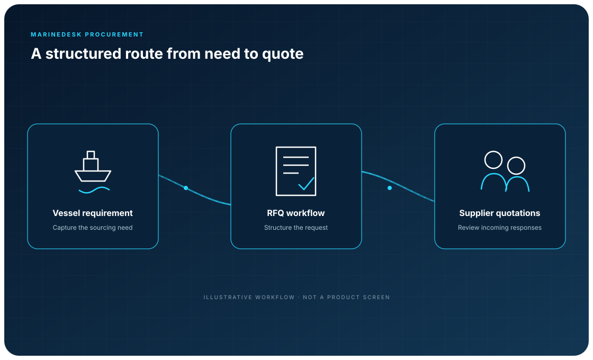

The Intelligence Layer for Global Maritime Operations
One Maritime Intelligence Platform. Six Connected Divisions.
A connected vision for the complex work behind global shipping—from procurement and vessel operations to people, technical management, and beyond.

One platform. Every part of maritime work.
Select a division to explore its purpose, illustrative workflows, intended users, and potential AI directions. Product availability has not been independently verified.
These pages describe the enterprise vision and potential workflows. Current product status and live capabilities require owner verification.

SUPPLIER-FACING COLLABORATION
Supplier Cloud
A connected Procurement experience for supplier collaboration around requests, quotations, and clarifications. Supplier Cloud is presented as part of Procurement, not as a separate core division.
One Maritime Intelligence Platform.
Six Connected Divisions.
Connected by a shared maritime context. Shaped around the work of each division.
Explore the six divisions